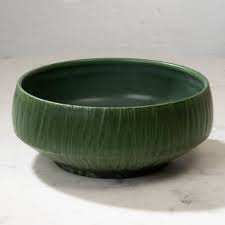

Summer Collection – Evergreen Bowl
Evergreen Medium Handmade Ceramic Pottery Bowl

Summer Collection - Teacup
Handcrafted teacup with a floral interior and subtle angel-wing motif

Summer Collection - Raku-fired Bowl
Raku-fired bowl with a distinctive black-and-white crackle pattern

Summer Collection - Complex
Ceramic jug Vase and Cup

Summer Collection - Copper Matte Vase
The Copper Matte Raku Technique

Summer Collection - Plate
The Japanese Art of Fixing Broken Pieces of Pottery With Gold